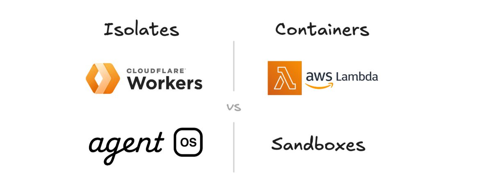
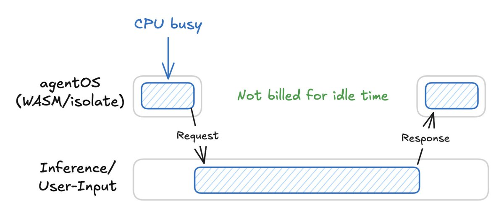
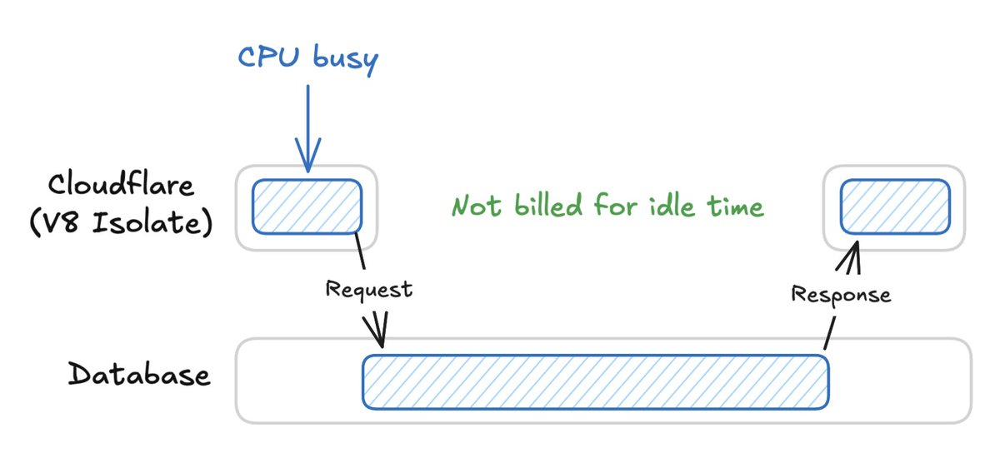
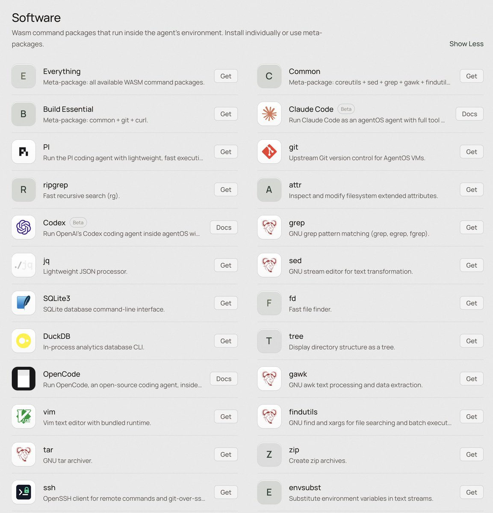

2010年代的Serverless战争以Cloudflare Workers的V8 Isolate架构证明：为每个请求预留一个完整虚拟机是巨大的浪费。现在，同样的故事在Agent沙箱领域重演。
Nathan Flurry在推文中介绍了agentOS：一个基于WebAssembly和V8 Isolate的开源Agent运行时，将Agent的内存占用从传统沙箱的1GiB降到22MB，同时保持Linux兼容性，支持bash、git、duckdb、Node.js、Python等原生软件。
2010年代的Serverless战争在两个阵营之间展开：AWS Lambda使用microVM为每个请求隔离计算资源，Cloudflare Workers使用V8 Isolate在共享进程中运行轻量级沙箱。
AWS Lambda优化了错误的方向：后端大部分时间在等待数据库和API调用，处于空闲状态，但Lambda一次只服务一个请求，预留了大量未使用的内存和CPU。一个空闲的microVM在等待数据库时完全闲置。
Workers的做法是改变空闲成本的含义：一个空闲的Isolate只是共享进程中的几MB堆内存，而不是为每个请求预留一个VM。它不使用的CPU可以分配给同一进程中的其他Isolate。一台机器可以承载数千个Isolate处理请求，而不是几十个microVM。

Agent和沙箱的行为与传统后端惊人地相似：它们大部分时间在等待推理、用户输入或执行简单的文件操作/脚本：就像后端等待数据库/API请求一样空闲。
然而，当前主流的Agent沙箱方案（Modal、Daytona、Vercel sandboxes）都采用容器-per-Agent架构，每个Agent独立占用一个完整的Linux容器，与AWS Lambda的microVM架构如出一辙。不管Agent是在活跃工作还是等待推理，这1GiB内存都被预留。
agentOS构建了一个开源的Cloudflare Workers式架构，使用WebAssembly和V8 Isolate提供Linux兼容的操作系统。核心思路是：不预留整个容器给每个Agent，只在Agent本身活跃时才消耗资源。
效果显著：一个简单的shell工作负载在agentOS中只需约22MB内存，而传统沙箱无论Agent是否活跃都预留1GiB。差距超过45倍。

agentOS的关键创新是将原生Linux软件编译到WebAssembly。如果软件能在沙箱中运行，大概率也能在agentOS中运行。
agentOS支持原生bash、git、duckdb、sqlite等，全部交叉编译到WASM。其内核支持POSIX兼容的文件系统、进程树和套接字。可以在上面运行开发服务器、数据分析、Node.js（完整JIT）、Python等各种任务。
实际上，很少有生产级Agent需要真正的x86或内存密集型工作负载。ChatGPT Work和Claude做的大部分工作只是电子表格、数据处理和API调用：这些对WebAssembly和V8来说轻而易举。
通过利用WebAssembly，agentOS可以作为库嵌入现有后端（就像使用Vercel的AI SDK一样），大幅简化基础设施并降低成本。
作为库运行的agentOS还提供了更精细的权限控制、出站中间件和Agent行为限制。你可以直接在agentOS中运行原生Claude Code、Codex、OpenCode和Pi，或使用自己的Harness。

agentOS建立在与Chrome和Cloudflare Workers相同的隔离机制之上，包括V8隔离、Spectre缓解、进程隔离和资源限制。安全性方面与经过大规模验证的生产级方案一致。
agentOS并非完全取代传统沙箱。对于编译Rust或使用旧版软件等重型开发工作，传统x86 Linux沙箱仍然是必要的。
agentOS提供了沙箱挂载（Sandbox Mounting）机制：当检测到需要重型工作负载时，Agent可以按需升级到完整的Linux VM。实际上，这意味着默认使用轻量级WebAssembly OS处理大多数廉价任务，仅在需要时升级到沙箱，无需妥协。

参考：https://x.com/NathanFlurry/status/2081498476970725735